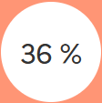
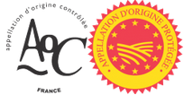
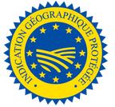
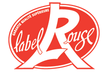
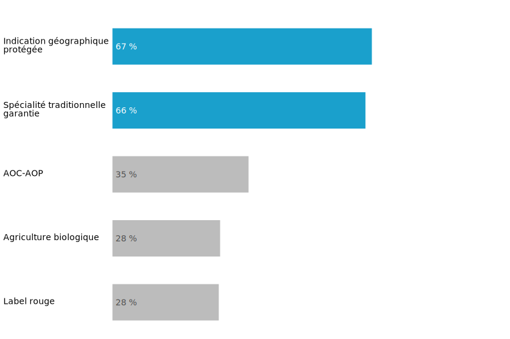
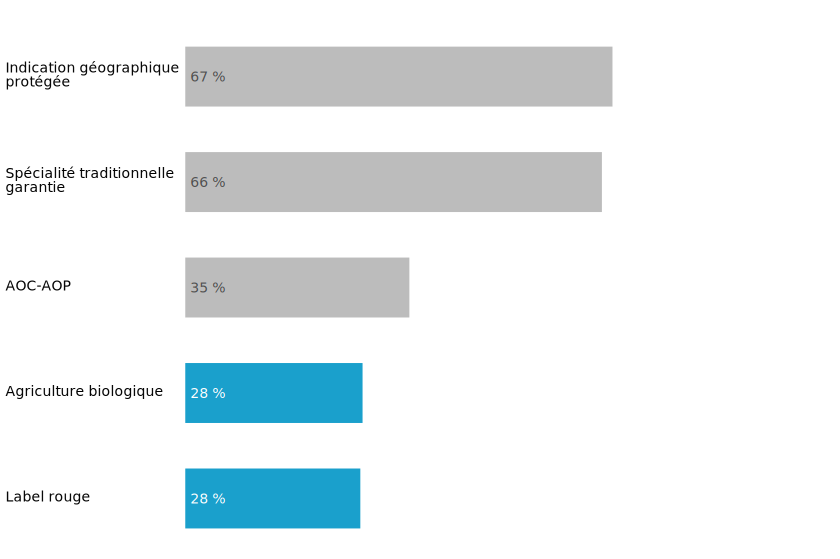

Signes de qualité ou d’origine
Premier producteur agricole de l’Union européenne, la France dispose aussi d’une puissante force de transformation avec ses industries agroalimentaires (IAA). En chiffre d’affaires ou en valeur ajoutée, seule l’Allemagne la dépasse, depuis 2015.
Cinq signes de qualité ou d’origine (dénommés aussi « SIQO ») peuvent qualifier les produits d’une exploitation agricole. L’Europe réglemente la plupart de ces certifications. Seul le label rouge est spécifiquement français.
 C’est la part des exploitations engagées dans au moins un signe de qualité ou d’origine en 2020, en France métropolitaine.
Retourner à l’accueil 
Partager la Viz (Mail) 
Partager la Viz (X)
Partager la Viz (Facebook)
Explorer les données territoriales 
Pendant la navigation, appuyer pour accéder aux autres actions 
« Agriculture biologique » (AB)
?
Ce mode privilégie les procédés non polluants, exclut l’usage des OGM et limite le recours aux intrants. Il est reconnu par l’Europe dès 1991. Concernant d’abord les productions végétales, il s’élargit au monde animal en 1999.
garantit un mode de production respectueux de l’environnement et un niveau élevé de bien-être animal.

« Appellation d’origine protégée » (AOP)
?
L’appellation d’origine contrôlée (AOC) désigne des produits répondant aux critères de l’AOP et protège la dénomination sur le territoire français. Elle constitue une étape vers l’AOP (signe européen apparu en 1992), qui protège le nom du produit dans toute l’Union. La notion d’ « appellation d’origine » est apparue en France dès 1905, pour lutter contre la fraude viticole. Le champ a été étendu en 1990 à l’ensemble des produits agricoles et alimentaires.
désigne un produit dont toutes les étapes de production sont réalisées selon un savoir-faire reconnu dans une même aire géographique.

« Indication géographique protégée » (IGP)
?
Signe européen qui protège le nom du produit dans toute l'Union. L'IGP concerne surtout les vins, mais aussi les fromages, la viande et les fruits. Le jambon de Bayonne, la fraise du Périgord, la tomme de Savoie sont des IGP.
identifie un produit agricole, brut ou transformé, dont les caractéristiques sont liées au lieu géographique dans lequel se déroule au moins sa production ou sa transformation selon des conditions bien déterminées.

« Label rouge »
?
Apparu dans la loi en France en 1960, sous l’impulsion d’aviculteurs, il concerne en premier lieu les produits animaux : volailles, œufs, viandes (et poissons). Il s’est étendu aux fruits et légumes, avec en 1966 l’ail de Lautrec.
désigne des produits qui, par leurs conditions de production ou de fabrication, ont un niveau de qualité supérieur par rapport aux produits standards.
« Spécialité traditionnelle garantie » (STG)
?
Signe européen créé en 1992, il concerne en France peu d’exploitations (1 300) et trois spécialités : le lait de foin, les moules de Bouchot et le Berthoud. Autre exemple à l’étranger, la « pizza napoletana » est une STG italienne, qui peut être produite n’importe où tant que le cahier des charges est respecté.
reconnaît une composition, une pratique ou un savoir-faire qui sont traditionnels. Ce signe est réservé aux produits alimentaires.
AOP et IGP relèvent d’une géographie, d’un terroir, leur cartographie évolue donc peu. Les trois autres signes (AB, label rouge et STG) ne sont pas liés à une localisation spécifique.
En 2020, les signes de qualité ou d’origine (SIQO) concernent 140 000 exploitations, soit 36 % de l’ensemble en France métropolitaine, contre 27 % en 2010.
Cette part augmente nettement, et tous les signes ? Le graphique suivant ne présente pas les STG : les exploitations bénéficiant de ce signe n’étaient pas comptabilisées en 2010. Elles sont par ailleurs peu nombreuses (1 300 en 2020). progressent en dix ans.
Part des exploitations avec SIQO pour 2010 et 2020
{kind=link}
{kind=link}
Une même exploitation peut cumuler plusieurs SIQO, pour un même produit ou des produits différents.
Une fois sur deux, une exploitation engagée dans une IGP l’est aussi en AOP
Plus généralement, quand une exploitation détient une IGP, deux fois sur trois, elle bénéficie d’un ou plusieurs autres SIQO. C’est aussi une caractéristique des exploitation poduisant une STG.
En revanche, les signes Agriculture Biologique et Label Rouge sont plus souvent présents seuls.
En revanche, les signes Agriculture Biologique et Label Rouge ? Un produit lable rouge ne peut bénéficier simultanément d'une AOP. sont plus souvent présents seuls.
Parmi les exploitations avec SIQO, part de celles avec au moins un autre signe

Parmi les exploitations avec SIQO, part de celles avec au moins un autre signe

Parmi les exploitations avec SIQO, part de celles avec au moins un autre signe
